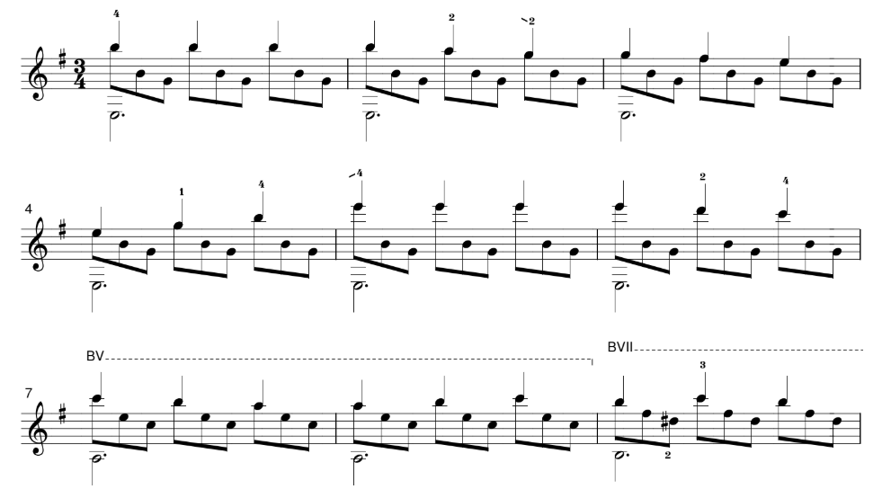

Hung Duong_
Home
Contemplation
Research for fun
Archive
What is this?
Basically a personal blog, where I post spontaneous fragmented shower thoughts about all unrelated topics.
Posts, in chronological order:
Authenticity versus creativity (?)
1 August 2020
About: Performance, creative process
A day with luthier Vu Tran
13 June 2020
About: Guitar, Traveling
The phenomenon of internet memes in education on mainstream media
20 May 2020
About: Memes, Science, Research
Silences in music
2 May 2020
About: Music, Rests, Performance Arts
The art in science (and the science in art)
18 April 2020
About: Science, Art, Research
10 mildly infuriate-things
11 April 2020
About: Preferences, Personal
Tablature is okay, but notation is superior
31 March 2020
About: Tablature, Notation, Music, Bach
In response to "Writing in Ink" by Caroline Welles
29 March 2020
About: Learning, Writing, Opinion
What to do during quarantine: A day of self-isolation
25 March 2020
About: COVID-19, Quarantine, Activities
How and why I built my own website myself
20 March 2020
About: Coding, HTML/CSS, Personal Web

Instead of overplaying Romance (and other mainstream pieces), play these – For guitar beginners
19 March 2020
About: Guitar Music, Repertoire, Popular
You Yangs hiking 2020
15 March 2020
About: Hiking, Nature, Melbourne
Nail clippers for classical guitar nails: Is it that bad?
11 March 2020
About: Guitar, Fingernails, Techniques